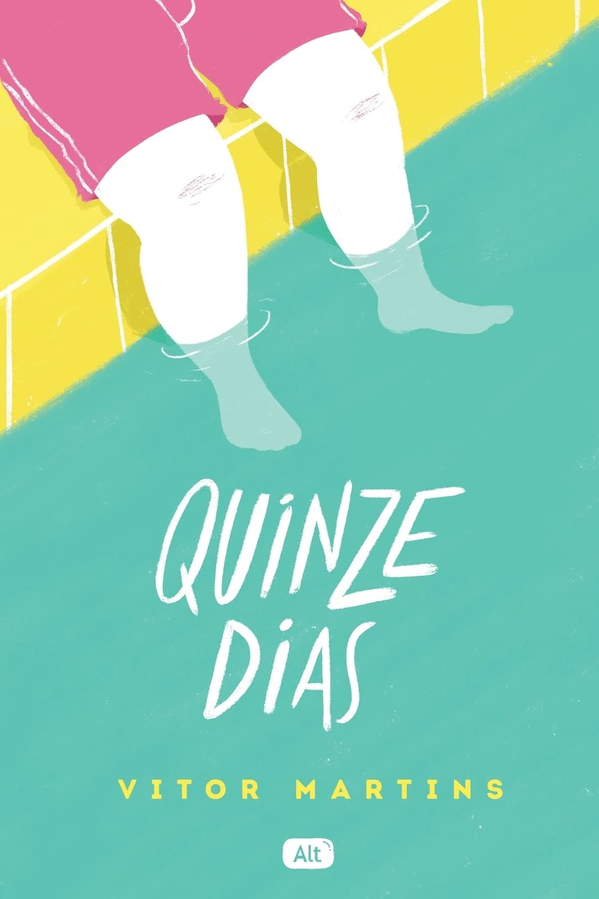
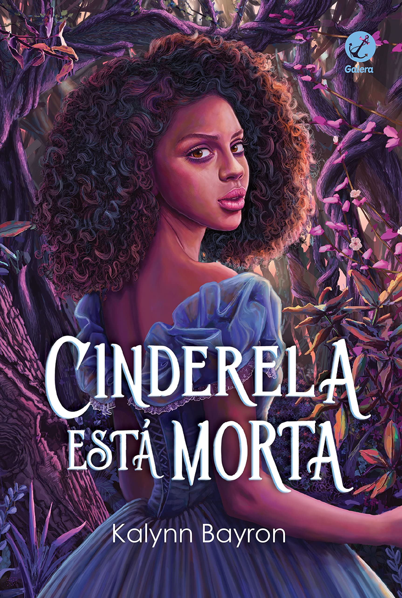
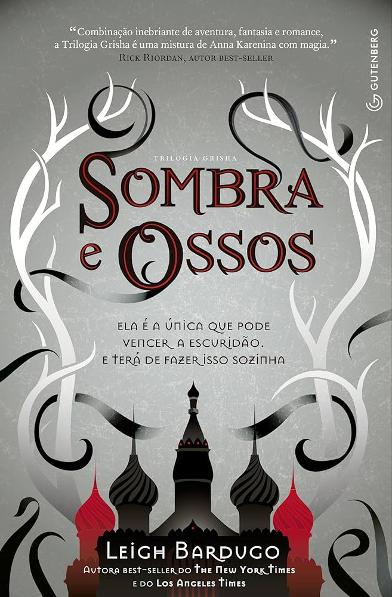
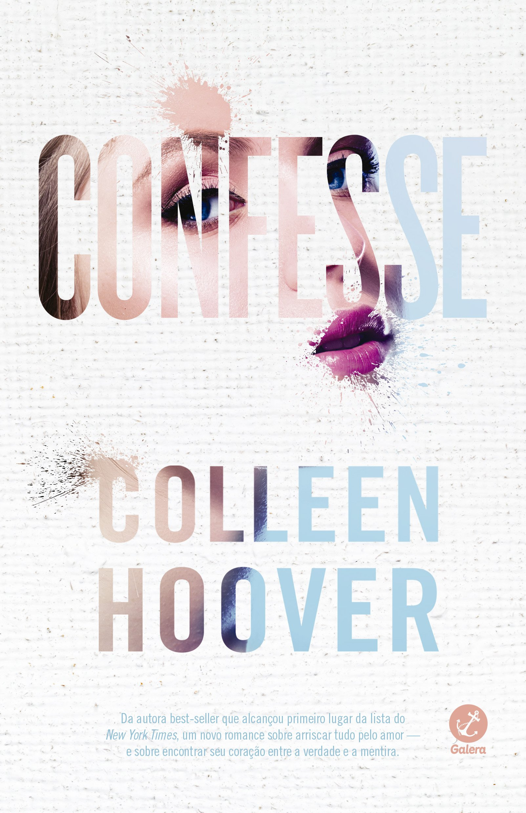
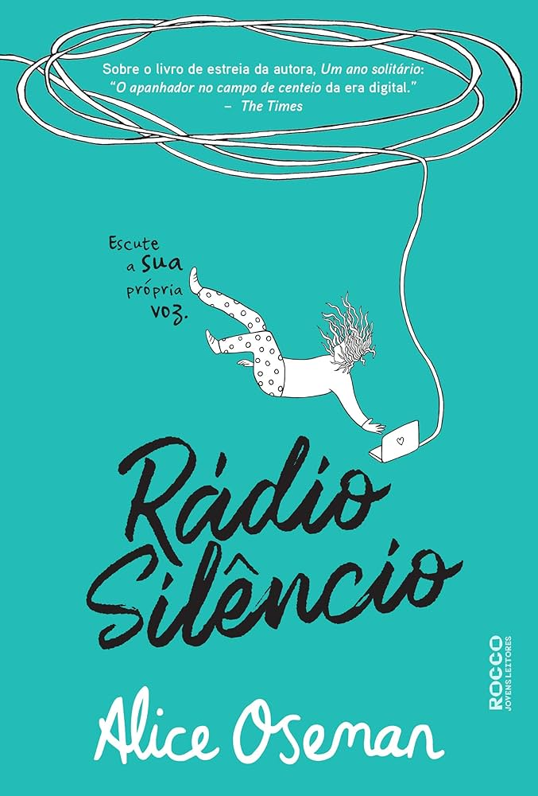
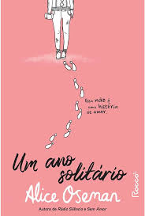
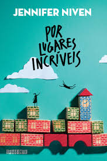
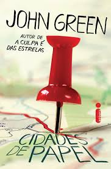
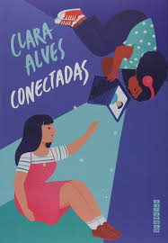

Destaques dos Famosos do Tiktok:
Mais emprestados: |
Romance |
|||||||
|
|
|||||||
Ficção |
Suspense: |
|||||||
|
|

Acervo Completo:

Enquanto Não te Encontro Emprestado |

Um Milhão de Finais Felizes Emprestado |

Quinze Dias Emprestado |

Cinderela Está Morta Emprestado |

As Vantagens de Ser Invisível Emprestado |

Os Dois Morrem no Final Emprestado |

A Culpa é das Estrelas Emprestado |

Aristóteles e Dante Emprestado |

O Sol Também é Uma Estrela Emprestado |

Relatos de Um Gato Viajante Emprestado |

1984 Emprestado |

Sombra e Ossos Emprestado |

Confissão Emprestado |
Sem Amor Emprestado |

Rádio Silencio Emprestado |

Um Ano Solitário Emprestado |

Mentirosos Emprestado |

Por Lugares Incríveis Emprestado |

Cidade de Papel Emprestado |

O Amor Não é Obvio Emprestado |
Sombria e Solitária Maldição Emprestado |

Conectadas Emprestado |
A biblioteca da meia-noite Emprestado |
Bem-vindos à Livraria Hyunam-dong Emprestado |